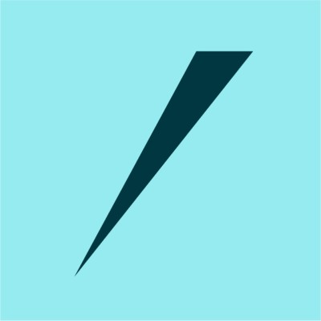
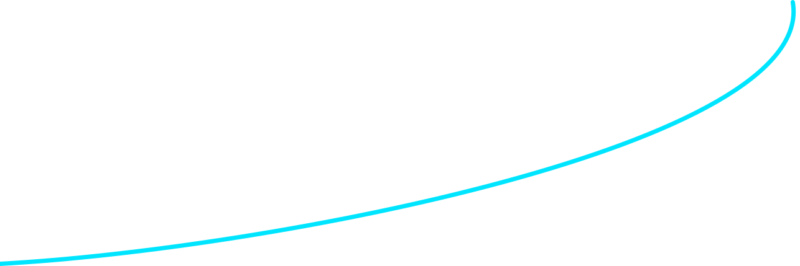
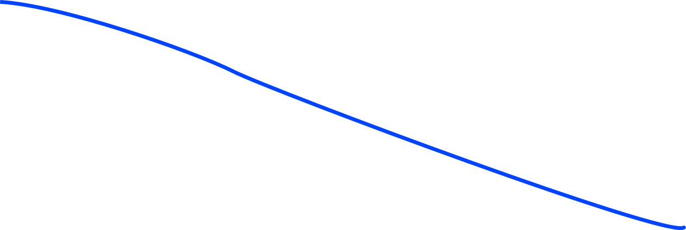
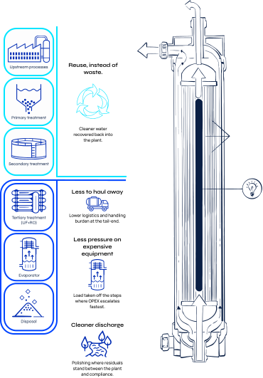
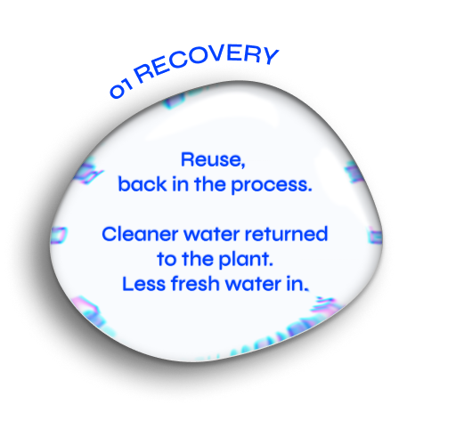
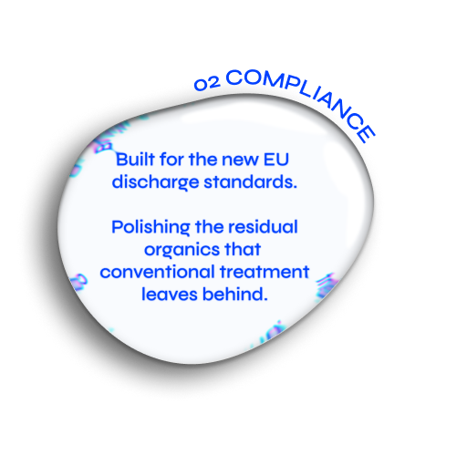
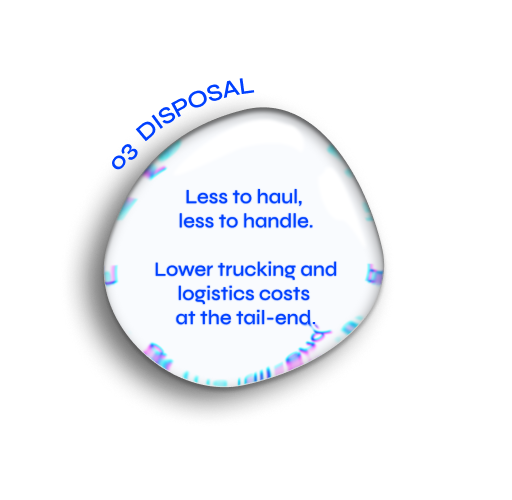
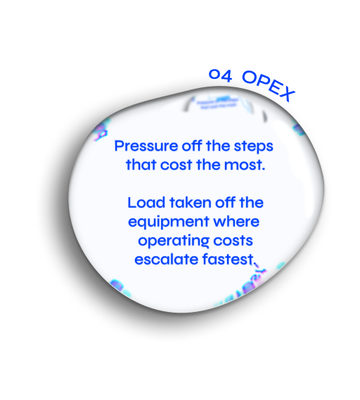

vāsuqi — photocatalytic water treatment technology
Water,
polished by
light
The last 5–10% of industrial wastewater is the hardest to clean. Pharmaceutical residues, dyes, recalcitrant organics that survive every step of conventional treatment. Vāsuqi is a visible-light polishing platform, designed to break them down. Built on DTU research, currently pre-seed.
Backed by:
DTU Sustain

Innofounder
Bio Innovation Institute
DTU Sustain
Innofounder
Bio Innovation Institute
pronounced VAH-su-kee
The last fraction is the hardest
The last 5% of COD can consume more than 60% of a treatment plant's OPEX.


Industrial wastewater is cleaned in stages. Biology, membranes, and thermal processes remove the bulk of the load.
What remains is the residual fraction. Small in volume, disproportionate in cost.
Treatment cost rises sharply chasing the final fraction.
Residual COD falls as treatment intensifies.
THIS IS WHAT VĀSUQI IS BUILT FOR.

The targets
are set
In 2024, the EU revised its Urban Wastewater Treatment Directive — the first major update in over thirty years.
80% removal of micropollutants from major plants. Interim targets from 2033. Full quaternary treatment by 2045. Under the polluter-pays principle, pharmaceutical and cosmetics companies cover 80% of the cost.
Regulation, timeline, and funding are now in place. Vāsuqi is built for this moment — without the energy demand or chemical load of conventional upgrades.
Where Vāsuqi Fits
Designed for lower OPEX. Fewer steps. Cleaner water.

Upstream treatment removes most of the burden. Vāsuqi is designed to sit at the downstream end, where residual organics still drive polishing, disposal, and complexity.
Don't replace what works. Finish what conventional treatment can't.
What Vāsuqi is built to change:



